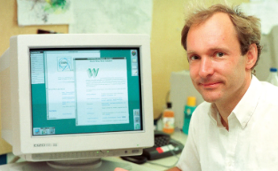
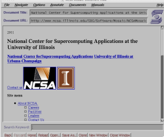

Arpanet
ARPANET togs i drift 1969 med pengar från det amerikanska försvarets forskningsorgan ARPA. Den 29 oktober skickades det första meddelandet mellan UCLA och Stanford "LOGIN" nådde bara fram som L och O innan datorn kraschade. Nätet användes för att forskare skulle kunna dela dyra stordatorer och filer, och e-post blev snabbt det populäraste. Det viktiga var paketförmedlingen, där data delas i småpaket som tar sig fram var för sig, samt övergången till TCP/IP 1983 som brukar räknas som internets födelse. En IP-adress är den unika sifferadress som identifierar en enhet på nätet, till exempel 192.168.1.1. DNS fungerar som internets telefonkatalog och översätter domännamn till IP-adress, vilket behövs eftersom datorer arbetar med siffror medan människor minns namn.
World Wide Web
World Wide Web skapades av Tim Berners-Lee, en brittisk dataingenjör vid forskningscentret CERN i Schweiz. Han lade grunden 1989 och byggde under 1990 HTML, HTTP och URL samt den första webbläsaren och webbservern. Anledningen var praktisk: tusentals forskare med olika datorsystem och information utspridd utan något sätt att länka mellan dokument. Den 6 augusti 1991 publicerades världens första webbsida på adressen info.cern.ch. Den var textbaserad med hyperlänkar och förklarade vad webben var, hur man hämtade dokument och hur man satte upp en egen server. Sidan fungerade alltså som projektets manual, och CERN har återskapat den så att den går att besöka än idag.

Mosaic
År 1993 släppte CERN webbtekniken fri, vilket gjorde att vem som helst kunde bygga sidor och sätta upp servrar. Samma år kom webbläsaren Mosaic från NCSA i USA, med Marc Andreessen som en av skaparna. Den var inte först, men blev först att slå igenom brett eftersom den visade bilder direkt i texten och fanns till Windows, Mac och Unix. Samma år fick Sverige sin första hemsida, byggd av datorföreningen Lysator vid Linköpings universitet med 21-årige Per Hedbor i spetsen. Servern döptes till Spinner och registrerades hos CERN i februari 1993, och sidan på lysator.liu.se handlade om föreningen och dess medlemmar. Den blev världens sjätte webbsida och finns kvar än idag.
